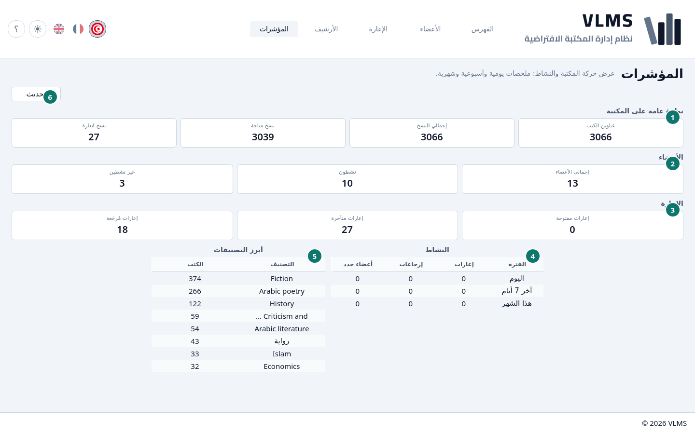

المؤشرات
أعداد الفهرس والأعضاء والإعارات.
المؤشرات لوحة، ليست قائمة. تحديث يعيد قراءة الأرقام.


- نظرة عامة على المكتبة
- الأعضاء
- الإعارة
- النشاط
- أبرز التصنيفات
- تحديث


نظرة عامة على المكتبة
- عناوين الكتب — العناوين الحية.
- إجمالي النسخ — النسخ الحية.
- نسخ متاحة — على الرف.
- نسخ مُعارة — خارجة الآن، سواء كانت الإعارة مفتوحة أو متأخرة.
الأعضاء
- إجمالي الأعضاء — الأعضاء الأحياء.
- نشطون — آخر يوم نشاط هو اليوم أو بعده. انظر حالة العضو.
- غير نشطين — كل من بقي حياً غير هؤلاء.
الإعارة
- إعارات مفتوحة — خارجة، والاستحقاق اليوم أو بعده. هذا لا يشمل الإعارات المتأخرة.
- إعارات متأخرة — خارجة، ويوم الاستحقاق مضى.
- إعارات مُرجَعة — عادت، ولم تُؤرشف بعد.
التقسيم نفسه في حالات الإعارة.
النشاط
الإعارات والإرجاعات والأعضاء الجدد، لليوم وللأيام السبعة الأخيرة ولهذا الشهر.
أبرز التصنيفات
التصنيفات التي لها أكثر العناوين الحية، وكم عنواناً لكل واحد.